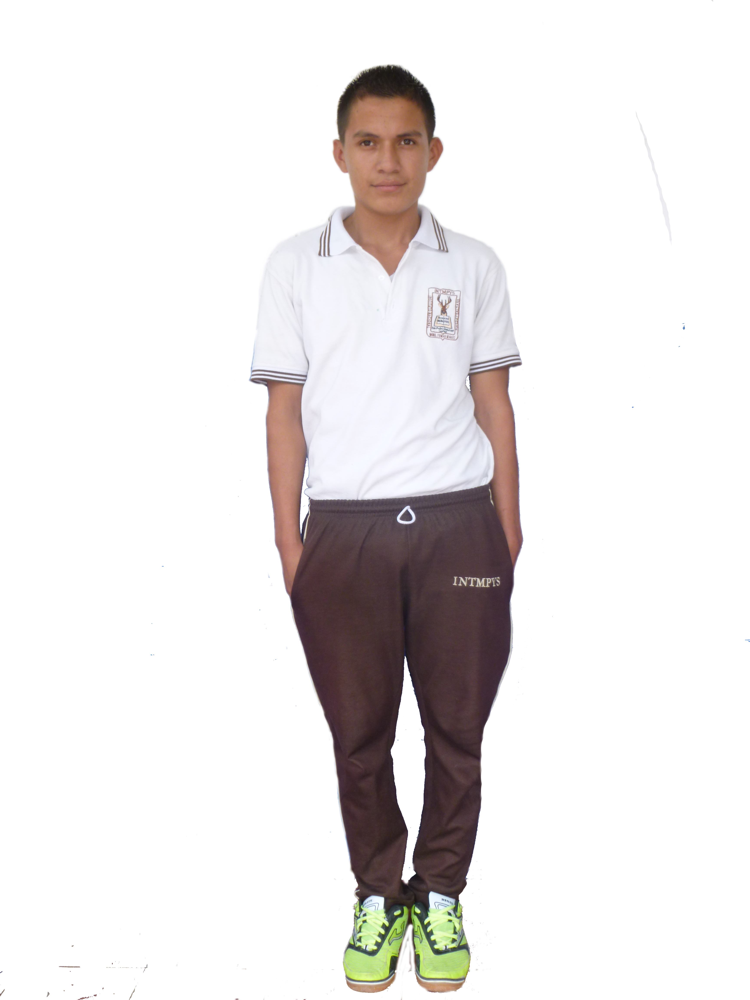
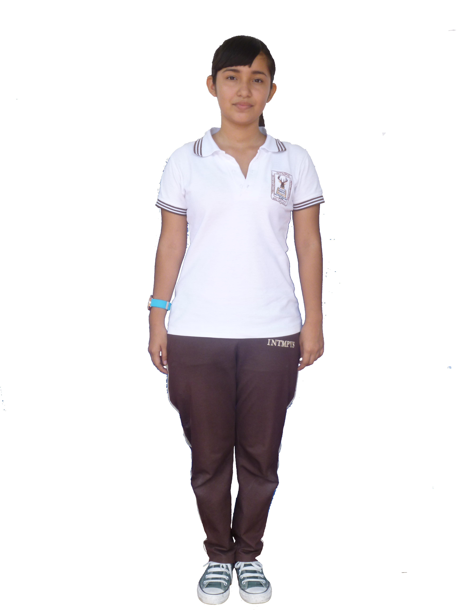

BACHILLERATO GENERAL
Formación integral en el área social y académica para integrarse a estudios superiores universitarios o tecnológicos.
BACHILLERATO TÉCNICO VOCACIONALOPCIÓN CONTADURÍA
Formación integral en el área moral y académica, adquiriendo dominio en el campo contable con alta capacidad para desenvolverse en empresas industriales, comerciales y despachos contables.
BACHILLERATO TÉCNICO VOCACIONAL OPCIÓN SECRETARIADO
Formación integral en las áreas moral y académica, adquiriendo el perfil profesional que les permita desempeñarse como una excelente asistente administrativa.
Señorita
- Blusa Blanca.
- Falda Azul.
- Zapatos de vestir negros.
- Calcetas blancas

Caballero
- Camisa Blanca.
- Pantalón azul línea recta.
- Cincho negro de cuero.
- Zapatos de vestir negros.
- Calcetines Azul o Blancos.
- Corte de cabello normal(no peinado de moda).
Extra
- Uniforme de gala (camisa y blusa manga larga blanca, corbata azul).
- Uniforme deportivo a la venta en la institución.
- Bolsón totalmente transparente.

